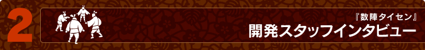

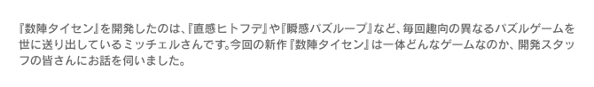
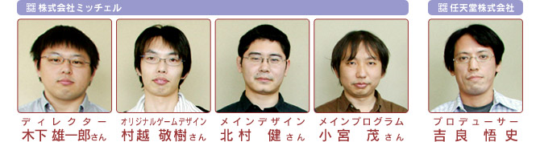
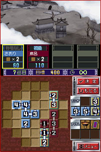
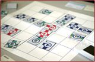
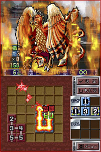

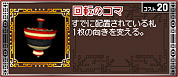
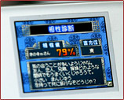
▲Ｎ.Ｏ.Ｍ６月号のトップページへ
| 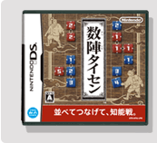 | 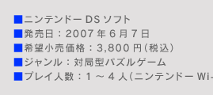 | 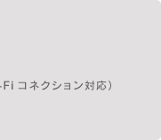 |
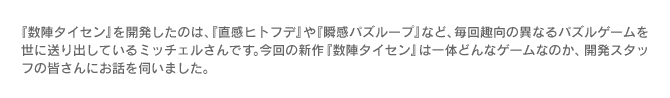
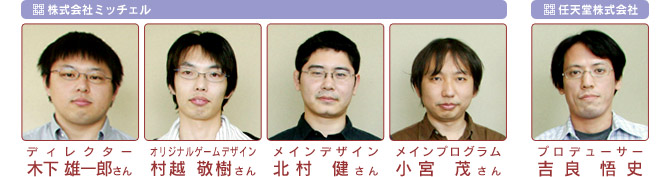
N.O.M：まずは『数陣タイセン』がどんなゲームなのか基本的な遊び方を教えていただけますか？
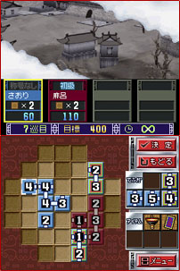
木下：ひとことで言うと「数字をつなげる」、「札同士をつなげる」というパズルゲームです。詳しくは公式サイトを見ていただくと良いかと思いますが、簡単に説明しますと、数字が書かれた札があり、その札から足が伸びています。将棋盤のようなフィールドに、その札を一枚ずつ足がつながるように置いていき、同じ数字がつながったり、ぐるっと一周するように足がつながったりすると、麻雀でいう「役」がつき、点数が入ります。これを繰り返して目標点に到達すればクリアというルールです。
吉良：そこに対戦という要素が加わります。「色札」と「虹札」という2種類の札を使ってプレイするのですが、「色札」は文字通り色のついた札で、役を作るには、自分の色同士をつなげる必要があります。例えば、自分が青の色札、相手が赤の色札の場合、相手の色札に足をつなげても役を作ることはできません。「虹札」の方は、どの色ともつなぐことができるオールマイティな色で、相手の置いた虹札に、自分の色札をつなげて役ができれば点数が入ります。逆に自分の置いた虹札に相手が札をつなぎ、役を作られてしまうこともあります。
村越：自分の役を作って点数を稼ぐのか、それとも相手の役作りを阻止して点数を取らせないようにするのか、要はどこまで攻めるのか、どこで守りに切り替えるのか……その攻守のバランスを考えながら進めていく部分にこのゲームの特徴があります。
N.O.M：このゲームが生まれたキッカケは？
村越：もともとミッチェルではパズルゲームを多く作っているのですが、反射神経のいるアクションパズルではなく、純粋にじっくり思考して遊べるパズルゲームを作りたいと温めていたアイデアがあったのですが、それがこのゲームの元となりました。単純に数字と道が書かれたカードをつなげて道を広げていく、陣地を広げていくというものだったのですが、その段階ではまだ漠然とした内容で、ゲームとしてはまとまっていませんでした。そこへたまたまトランプのポーカーをやっているときに思いついた、「ストレート」のように数字がつながる感触、それを組み合わせたら何か生まれるんじゃないのかなと思いついたことで、整理できていなかったアイデアがすごくまとまったんです。
吉良：たしか最初に企画のプレゼンテーションをいただいたのは2004年の11月だったはず。ちょうどニンテンドーＤＳ発売直前の時期でしたよね。
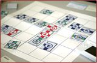
村越：ええ、その頃だったと思います。まずは遊び方のプロトタイプをとりあえず紙で作ってミッチェル内での意見も聞いてみることに。
木下：印象的だったのは中学生くらいになるスタッフの子供たちに試してもらったときですね。初めて触ったのに直感的にルールを理解してもらえた。このわかりやすさは良い感触だと思いました。
吉良：最初のプレゼンを受けたときに、いうなれば「見たことありそうで、無い」という印象がありました。まったく新しいルールのゲームというのは総じて取っ付きにくいのですが、このゲームは「どこかで見たことあるんだけどプレイしてみると新しい」という感覚がありました。
N.O.M：初めからニンテンドーＤＳのゲームとして開発されたのですか？
村越：元々の企画を思いついたのが、2003年の12月頃でしたし、プラットフォームについてはあまり考えずに企画を立ち上げました。まずは“遊び”の要素を固めていくのが大切でしたので。そうしているうちにニンテンドーＤＳが発表されて、仕様を眺める限り「ピッタリ」のハードウェアだと感じました。
木下：タッチペンということで直感的に遊べますし、ニンテンドーＤＳなら1人1台ということで相手に手札を見られる心配もありません。対戦もワイヤレスでスマートにできる。本当に運が良かったというか、メリットばかりの組み合わせだと思っています。そのうち任天堂側から「ニンテンドーＤＳでの開発で」と打診が届きました。
N.O.M：遊びのエッセンスが現在の形になるまでには、どのような変遷が？
村越：じつは数字をつなげていくのはいいけど、そこから役を作っていくというコンセプトが面白さにつながりにくいかもという印象もありました。というのも現在は1つのフィールド上で対戦している形ですが、当時はプレイヤーごとに別々のフィールドで役を作っていく遊びだったんです。
吉良：干渉が少なく、駆け引きする感覚の薄いシステムでしたよね。
木下：相手をジャマすることもなく、早く役を作って得点をどんどん積み上げていくものでした。役作りを楽しませるために札1枚1枚が個別の能力を持っていたり。札というよりはキャラクターとして性格付けなんかもされていました。
村越：50種類ぐらいはあったと思います。いま思えばどうやって全部の能力を覚えればいいんだろうと途方に暮れそうですが。どちらかというと当初はカードゲームみたいな要素も含んでいたんです。
吉良：ところが、これが対戦してもあまり盛り上がらないんです。相手からの妨害が全然無いので淡々と進むわけですよ。
村越：結果、お互いのプレイに“干渉し合う”というのが、このゲームを開発する上での大きなテーマになっていきました。
N.O.M：干渉し合うために、どのような方法を取られたのでしょうか？
村越：まず、別々だったフィールドを１つにしました。このアイデアは当初からあったんですけど、おたがいが好きなところに置けるようでは、ジャマし合うだけで終わるゲームになってしまうという問題点がありました。そこで出てきたのが、「札の配置制限」、「虹札」、「アイテム」、そして｢フィールドの仕掛け｣でした。
木下：「札の配置制限」というのは、「一手目はどこにでも置けるが、それ以降は自分の色札に隣接するように置かなければならない」というルールです。このルールのおかげで、単純にジャマをし合うことは回避できました。ただし、これでは攻め込みにくくなってしまう。
村越：その解決策を出してくれたのが「虹札」ですね。その隣にはどの色の札でも置けるというものです。相手の陣地に攻め込むいい案がないかずっと考えていたある日、ふと夢の中で思いつきました。
木下：開発途中では、虹札も自分の色札の隣りに置かなくてならない、という配置制限を設けていました。でも、そのままだと相手が自分のそばに札を置くキッカケにしかならない。そこで、虹札はある程度自由に配置できるように変更し、虹札を相手札の近くに置いて、そこからジャマをしていけるようにしました。置いた虹札を他のプレイヤーに利用されてしまうリスクもあるので、メリハリをつけることができたと思います。
吉良：「アイテム」は、かなり初期の段階からあった案です。アイテムを使うと手持ちの点数をいくらか消費して、すでに配置済みの札の足を増やしたり、盤上に設置することで相手が札を置けない状態にしたりと、さまざまな効果を得ることができます。自分のために使ったつもりが相手の役に立っていたり、その逆もあったりと、フィールドを１つにしたことで、特徴的なものになりました。
木下：「アイテム」に近いものとして考えたのが、フィールド上に盛り込んださまざまな仕掛けです。
吉良：どちらかの得点が一定の点数に到達すると、ステージが広くなっていったり、札を置くと何かが起こるマスが出現したり、紙のボードゲームではなかなか出来ない演出を行っています。
村越：仕掛けを盛り込みたかったのは“理詰めだけでは勝てない”ゲームにしたかったんです。その意味ではアイテムも同じ理由ですね。1つのアイテムで戦局が変わる場合もあるわけです。
吉良：ただ、一発逆転ができる要素は必要なんですけど、やりすぎると大味で飽きられてしまう。ここも調整に悩まされる部分でしたね。
N.O.M：「役」に関しては、フィールドを１つにしたことで変化はありましたか？
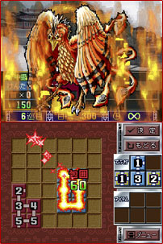
村越：「役」の種類はかなり初期の段階から決まっていて、特に変更はありませんでした。ゲーム中では、役のことを「接合」と呼んでいまして、４種類あります。同じ数字を２つ以上つなげる「同数接合」、数字を順番どおりにつなげる「数列接合」、つながっている部分が一周するようにつなぐ「包囲接合」、そして他につなげられる接合部（足）がなくなるようにつなぐ「完全接合」です。
木下：「同数接合」と「数列接合」は数字が関係する役、「包囲接合」と「完全接合」は札同士のつながり方が関係する役です。役は重複することが可能で、例えば、同じ数字の札を使って接合部分が一周するように配置すれば、「同数接合」と「包囲接合」の役を重ねて作ることができます。
村越：「役」の種類に変更はなかったのですが、１つのフィールドであることと、虹札のおかげで、相手が作りかけていた役を横取りできる可能性ができ、遊び方に広がりが生まれました。
木下：ただし、役を作ったときの計算方法はかなりシンプルにまとめました。最初は役を作るための数字とは別に、得点用の数字が札ごとに割り振られていて、例をあげると、同じ「１」が２枚の同数接合でも、「１」の札に書かれた得点用の数字によって得点が異なっていたんです。
吉良：しかしこの点数計算はややこしいという印象がありました。対戦ゲームである以上、今どちらが勝っていて、どうすれば逆転できるか、勝ち負けに通じるスコアが明確でなければいけません。シンプルなルールのゲームにしようと考えているのに、点数計算が複雑で時間がかかってはテンポを悪くするだけです。そこで、つながった札の枚数×１０点、完全接合の場合は、難しさを考慮して×２０点という計算方法に落ち着きました。
N.O.M：そういえば相手の手札が見えないのがドキドキします。
村越：初期段階では相手の手札も見えていたんですよ。でも見えていると、それを含めた戦略を考えたくなりますよね？ それではテンポの良い対戦はできないと感じたんです。
木下：画面の雰囲気として将棋や囲碁をイメージされるかもしれないですけど、むしろ麻雀に似ているかもしれませんね。相手の手札を予想しながら遊ぶ感覚です。
N.O.M：グラフィックの面で何か工夫したことはありますか？
吉良：札の持つ情報性というか、画面の見易さの部分については細かく気を遣いました。
北村：『数陣タイセン』ではこの札が主役です。そして札には、真ん中の数字と接合部、それにプレイヤーを示す色など、たくさんの情報が詰まっているわけです。
木下：大きなフィールドですと、相対的に札が小さくなります。そうなると1枚の札を描く縦横のドット数も24ドットから16ドットへと少なくなる。16ドットになると、ちょっとした柄や模様をつけたりすると途端に見にくくなってくる。
北村：やはり16×16ドットで描いた小さい札でも下の盤面にカチッとハマッている感じにするために実際は1ドットぐらい削っています。加えて、しっかり伝えたかったのが札同士の接合部がつながっている感触でした。ほんの1ドットの色や形をどうするかという判断なんですけど、限られたスペースでのデザインだったので苦労しました。最後にたどり着いたのは「シンプルに見やすく」ということです。
N.O.M：思考型ゲームというとコンピュータ（CPU）を相手にする場合の難易度調節も難しそうですね。
小宮：対戦相手がコンピュータの場合、次の一手を打つまでの思考時間などを気になさる方がいるかもしれませんが、ストレスのないレベルにまとまったと思っています。CPUの強さを決めるプログラムとしては、地味な方法ですが基本的に役の判定をメインに考えています。例えば対戦相手があと何枚でどんな役ができるのか、それをどの段階で防ぎにいくのか、それとも自分の役作りを優先させるか、そこがCPUごとの性格づけになっています。
木下：CPUの名前の前に「包囲名人」や「数列名人」などの称号が付いているのですが、CPUの戦法を知るときは、この称号がヒントになるかもしれませんよ。
村越：ちなみに、称号はプレイヤーの名前にもつけることができます。特定のプレイ条件をクリアすることで選べる称号が増えていくのですが、例えば「包囲名人」なんかは、高得点の「包囲接合」を多く作っていると獲得できます。ということは、「包囲名人」がついているCPUは、包囲接合を得意とした戦法を取ってくるかも知れない、ということです。
N.O.M：パズルゲームというのは性別・年齢層を問わず多くの方が興味を持つジャンルだと思います。この点で気をつけたことは？
村越：企画を立てるときから考えていたのは、見た目にもわかりやすい素材を扱うということでしょうか。例えば、札に書かれている文字も、アルファベットではなく、誰が見ても分かりやすい数字にしました。
吉良：他には、初めてプレイしたとき、適当に札をつなげて遊んでも、ある程度楽しめるようなゲームに、というところでしょうか。そういったアバウトさも大切なんですよね。加えてゲームが持っている遊びの要素を最初に一気に並べてしまうと混乱するので、テクニックにしてもアイテムにしても順を追って増えていくようにしてあります。
小宮：スムーズに遊び方を知ってもらえるように、1人プレイの「物語」モード序盤に出てくる対戦相手の調整は特に時間をかけています。物語を進めながらルールや有効な戦術を学んでもらえるようになっているのではないかと思います。
木下：ユーザーの皆さんが初めてプレイするルールのゲームなので、さまざまな戦法を体験していただければと思って開発を進めました。結果的に、当初考えていたよりも多くのステージ数を用意することができました。ひととおりのルールやテクニック、仕掛けなんかがわかれば、次は友達との対戦に挑戦してみてください。
N.O.M：実際に開発者の皆さんと対戦をお願いしてよろしいでしょうか？
吉良：いいですね。折角ですので4人対戦をしてみましょうか。人間対人間の場合は、プレイヤーごとに独自のプレイスタイルがあると思いますので、より色々な状況を経験できると思います。
N.O.M：ハンデとして皆さんのプレイスタイルを教えていただけますか。
木下：私は接近戦が好きですね。序盤から相手札の接合部をつぶしながらガチガチに攻めるタイプです。色札を虹札に変える『変化の宝玉』などを使って、相手の札にも積極的に干渉していきます。
村越：周りの札を破壊する『破壊の石像』など、ステージに設置するタイプのアイテムを使った心理戦が好きです。設置型アイテムはどこに置いたかはわからないものの、使ったことは相手にもわかるので、わざと置きそうもない場所へ設置するなどの駆け引きを仕掛けます。
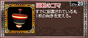
吉良：相手のジャマをすべく積極的にアイテムを使っていきます。相手の大きな役をつぶしつつ勝ちきると。設置されている札を回転させて接合部の位置を変えることができる『回転のコマ』はオススメですよ。自分の役を作るために有利なところに接合部を出したり、相手の役をつぶすために接合部を切り離したりと、状況に合わせて使い分けられることができます。
北村：自分は相手との距離を置くタイプかも。相手よりも先に点数の高い役を作って逃げ切るパターンです。虹札と自分の札の位置を入れ替えられる『交換の鏡』など自分が役を作りやすくなるアイテムをよく使いますね。
小宮：密かに一発逆転の役を狙うのが好きです。他の3人の注目を避けながらコツコツと準備していくわけです。勝負どころで重宝するのは接合部を増やす『増加のお札』ですね。
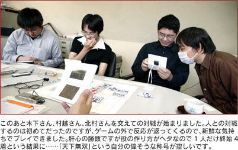
N.O.M：北村さんが「完全接合」の大きな役で逆転勝利ですね。
北村：完全接合なので接合部1本の札が来るかどうかの勝負でしたがツイていました。うまい具合にこちらへの注意が逸れていたのも勝因の１つですね。
村越：気にはかけていたんですけどね……う〜ん。
木下：そのあたりは4人対戦の醍醐味ですね。首位を走るプレイヤーに対応するためノーマークができたり、ときには敵同士が協力し合うこともあったり。直接話せないWi-Ｆi対戦では、札の配置で自分の意思をアピールするなんてテクニックもあります。大きな役ができそうなAさんの近くに虹札を置いて「ここの接合部、次のBさんが止めてね」というメッセージを込めたりする。まあ、Bさんがそれを察してくれないと空振りに終わったりもするのですが。
吉良：同じ虹札に関することで言えば、相手の苦し紛れに置いた虹札を見逃さない、これも大切です。終盤の粘りが逆転につながりますから。
N.O.M：対戦後に、なにやらパーセンテージが出てきましたがこれはなんでしょう？
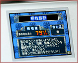
木下：勝敗表示だけでは少し味気ないので、相性診断の要素を入れてみました。勝っても負けても見ることができます。100％に近いほど相性が良い状態で、対戦したプレイヤーごとに見ることができますよ。
小宮：相性の良し悪しは対戦時のプレイスタイルを見ながら判定しています。相性が良いということは似たような戦術を使っている同士といえますね。
吉良：Wi-Ｆi対戦では特定の参加者が対戦途中で接続を切ってしまうことも心配されます。切断するプレイヤーについては、プレイヤーの強さを表す「レーティング」を下げるようにすることで対応しています。さらに残されてしまった参加者には「物語」に登場する「仙人」が慰めてくれるというケア付きです。
N.O.M：最後に初めてプレイされるユーザーの方々へアドバイスをお願いします。
木下：対戦に力を入れたゲームです。興味を持たれた方はＤＳステーションで体験版をダウンロードしてみてください。体験版とはいえ、かなりのボリュームを盛り込んであります。さらに体験版をクリアすると、製品版の対戦ステージを増やせるパスワードが表示されるというオマケ付きです。
小宮：頭の体操になると思います。年齢を問わず色々な人に遊んでもらいたいです。遠く離れた人ともWi-Fiを使って対戦できますが、みんなで集まって楽しむ通信対戦もオススメです。忙しく操作するゲームではないので、相手のリアクションを眺めながら楽しめますよ。
北村：1人用のモードもしっかり作ってあるので、対戦につながるテクニックを色々と覚えられます。役や得点計算が覚えにくいという初心者の方は「お題」モードを試してみるのもオススメです。役の作り方と点数計算を覚えるのにピッタリですよ。それと大きな役ができたときは、上画面の演出も楽しんでくださいね。
村越：やはり、この新しい“遊び”を体験して欲しいことに尽きます！最初は札をどんどんつなげて役を作り、スコアアップに専念しても充分に楽しめると思います。そのうち多くの札を連結させて派手な役が作れるようになってくれば、今度はその爽快感も味わってほしいです。それと、称号ですが、ちょっとヘンテコなものも用意していますので、色んなプレイスタイルを試してみてください。
吉良：アクション性のない対戦ゲームですので、お子さんや年配の方も将棋や囲碁を楽しむ気分で遊んでいただければと思います。
Wi-Ｆi対戦がスタートする発売日が待ち遠しいです。今日はありがとうございました！
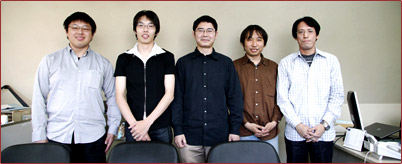
▲Ｎ.Ｏ.Ｍ６月号のトップページへ